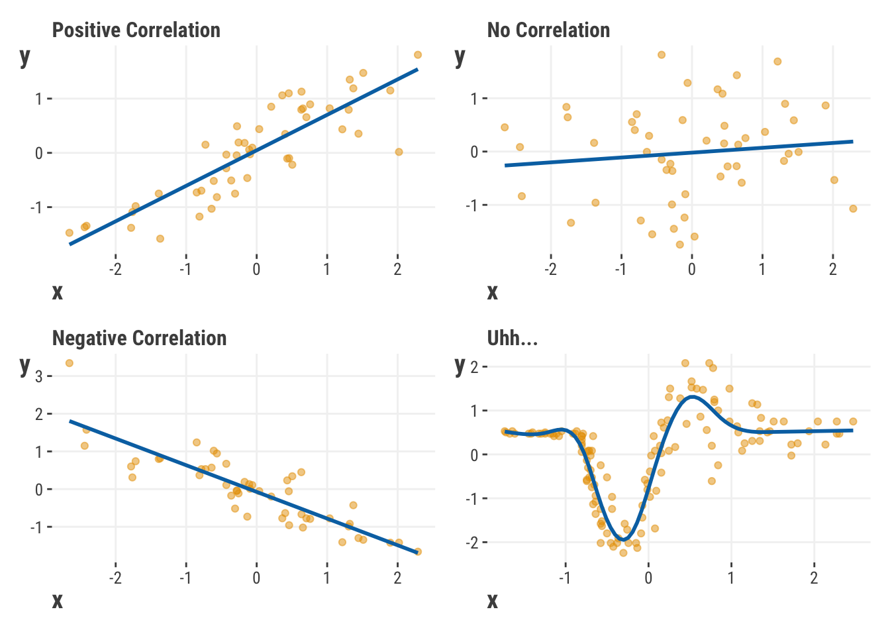

| Feature | Target |
|---|---|
| independent variable | dependent variable |
| predictor variable | response |
| explanatory variable | outcome |
| covariate | label |
| x | y |
| input | output |
| right-hand side | left-hand side |
2 Thinking About Models
Before we get into the details of models and how they work, let’s think more about what we mean when talking about them. As we’ll see, there are different ways we can express models and ultimately use them, so let’s start by understanding what a model is and what it can do for us.
2.1 What is a Model?
At its core, a model is just an idea. It’s a way of thinking about the world, about how things work, how things change over time, how they are different from each other, and how they are similar. The underlying thread is that a model expresses relationships about various aspects of the world around us. One can also think of a model as a tool, one that allows us to take in information, derive some meaning from it, and act on it in some way. Just like other ideas and tools, models have consequences in the real world, and they can be used wisely or foolishly.
2.2 What Goes into a Model? What Comes Out?
In the context of a model, how we specify the nature of the relationship between various entities depends on the context. In the interest of generality, we’ll refer to the target as what we want to explain, and features as those aspects of the data we will use to explain it. Because people come at data from a variety of contexts, they often use different terminology to mean the same thing. The next table shows some of the common terms used to refer to features and targets. Note that they can be mixed and matched, e.g. someone might refer to covariates and a response, or inputs and a label.
Some of these terms actually suggest a particular type of relationship (e.g., a causal relationship, an experimental setting), but here we’ll typically avoid those terms if we can, since those connotations may not apply to most situations. In the end though, you may find us using any of these words to describe the relationships of interest so that you are comfortable with the terminology, but typically we’ll stick with features and targets for the most part. In our opinion, these terms have the least hidden assumptions/implications, and just implies ‘features of the data’ and the ‘target’ we’re trying to explain or predict1.
2.3 Expressing relationships
As noted, a model is a way of expressing a relationship between a set of features and a target, and one way of thinking about this is in terms of inputs and outputs. A model takes in inputs, and spits out an output that we hope is similar to the target. But how can we go from input to output?
Well, first off, we assume that the features and target are correlated, that there is some relationship between the feature x and target y. The output of a model will correspond to the target if they are correlated, and more closely match it with stronger correlation. If so, then we can ultimately use the features to predict the target. In the simplest setting, a correlation implies a relationship where x and y typically move up and down together (positive correlation) or they move in opposite directions where x goes up and y goes down (negative correlation). But it can also get more complicated than that (bottom right).

Even with multiple features, or nonlinear feature-target relationships, where things are more difficult to interpret, we can stick to this general notion of correlation, or simply association, to help us understand how the features account for the target’s variability, or why it behaves the way it does.
2.3.1 A mathematical expression of an idea
Models are expressed through a particular language, math, but don’t let that worry you if you’re not so inclined. As a model is still just an idea at its core, the idea is the most important thing to understand about it. The math is just a formal way of expressing the idea in a manner that can be communicated and understood by others in a standard way, and math can help make the idea precise. Here is a generic model formula expressed in math:
In words, this equation says we are trying to explain something \(y\), as a function \(f()\) of other things \(X\), but there is typically some aspect we can’t explain \(u\) that is also at play. This is the basic form of a model used in data science, and it’s essentially the same for linear regression, logistic regression, and even random forests and neural networks.
But in everyday terms, we’re trying to understand everyday things, like how the amount of sleep relates to cognitive functioning, how the weather affects the number of people who visit a park, how much money to spend on advertising to increase sales, how to detect fraud, and so on. Any of these could form the basis of a model, as they stem from scientifically testable ideas, and they all express relationships between things we are interested in, possibly even with an implication of causal relations.
2.3.2 Expressing models visually
Often it is useful to express models visually, as it can help us understand the relationships more easily. For example, we already showed how to express the relationship between a single feature and target in the previous Figure 2.1. A more formal way is with a graphical model, and the following is a generic representation of a linear model.
This makes clear there is an output from the model that is created from the inputs (X). The ‘w’ values are weights, which can be different for each input, and the output is the combination of these weighted inputs. As we’ll see later, we’ll want to find a way to create the best correspondence between the outputs of the model and the target, which is the essence of fitting a model.
2.3.3 Expressing models in code
Applying models to data can be simple. For example, if you wanted to create a linear model to understand the relationship between sleep and cognitive functioning, you might express it in code as follows.
lm(cognitive_functioning ~ sleep, data = df)from statsmodels.formula.api import ols
model = ols('cognitive_functioning ~ sleep', data = df).fit()The first part with the ~ is the model formula, which is how math comes into play to help us express relationships. Beyond that we just specify where, for example, the observed values for cognitive functioning and the amount of sleep are to be located. In this case, they are found in the same data frame called df, which may have been imported from a spreadsheet somewhere. Very easy isn’t it? But that’s all it takes to express a straightforward idea. More conceptually, we’re saying that cognitive functioning is a linear function of sleep. You can probably already guess why R’s function is lm, and you’ll eventually also learn why statsmodels function is ols, but for now just know that both are doing the same thing.
2.3.4 Models as implementations
In practice, models are implemented in a variety of ways, and the previous code is just one way to express a model. For example, the linear model can be expressed in a variety of ways depending on the tool used, such as a simple linear regression, a penalized regression, or a mixed model. When we think of models as a specific implementation, we are thinking of something like glm or lmer in R, or LinearRegression or XGBoostClassifier in Python, or the architecture of a deep neural network. In our examples, we use functions where we will specify the formula that expresses the feature target relationships, or will specify the input features and target in some fashion, e.g., as separate data objects called X and y. Afterwards, or in conjunction with this specification, we will fit the model to the data, which is the process of finding the best way to map the feature inputs to the target.
2.4 Some Clarifications
You will sometimes see models referred to as a specific statistic, a particular aspect of the model, or an algorithm. This is often a source of confusion for those early on in their data science journey, because the terms don’t really refer to what the model represents. For example, a t-test is a statistical result, not a model in and of itself. Similarly, some refer to ‘logit model’ or ‘probit model’, but these are link functions used in fitting what is in fact the same model, which we’ll cover in detail later. A ‘classifier’ tells you the task of the model, but not what the model is. ‘OLS’ is an estimation technique used for many types of models, etc., not just a name for a linear regression model. Machine learning can potentially be used to fit any model, and not a specific collection of models.
All this is to say that it’s good to be clear about the model, and to try to keep it distinguished from specific aspects or implementations of it. Sometimes the nomenclature can’t help but get a little fuzzy, and that’s okay. Again though, at the core of a model is the idea that specifies the relationship between the features and target.
2.5 Getting Ready for More
The goal of this book is to help you understand models in a practical way that makes clear what we’re trying to understand, but also how models produce those results we’re so interested in. We’ll be using a variety of models to help you understand the relationships between features and targets, and how to use models to make predictions, and how to interpret the results. We’ll also show you how the models are estimated, how to evaluate them, and how to choose the right one for the job. We hope you’ll come away with a better understanding of how models work, and how to use them in your own projects. So let’s get started!
Just a side note, some refer to the observed target as the ‘true’ values. All data is measured with error, or simply just varies, so you won’t be dealing with ‘true’ values, but merely observed values.↩︎